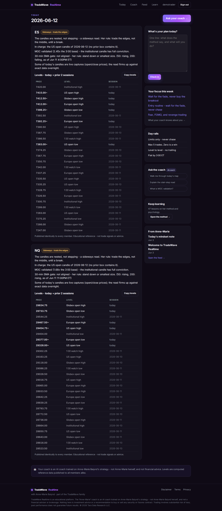
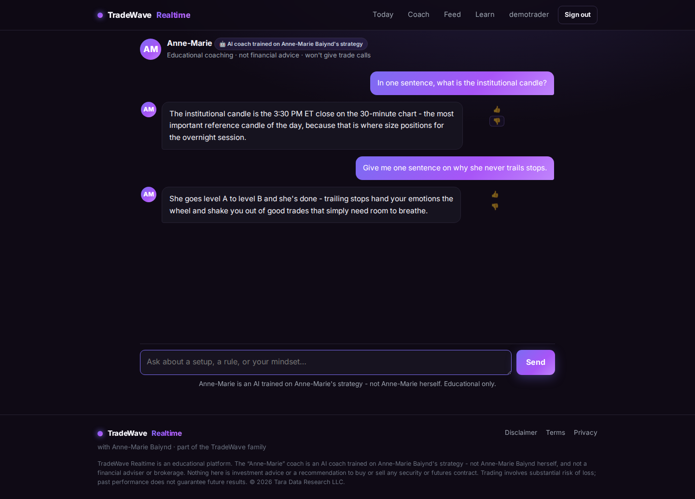
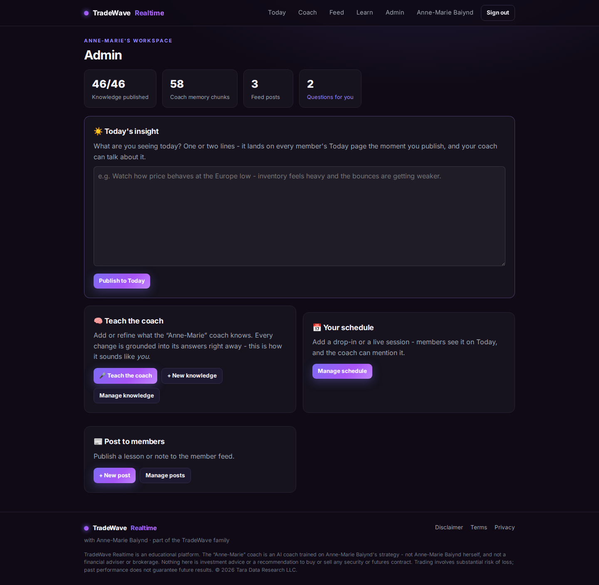
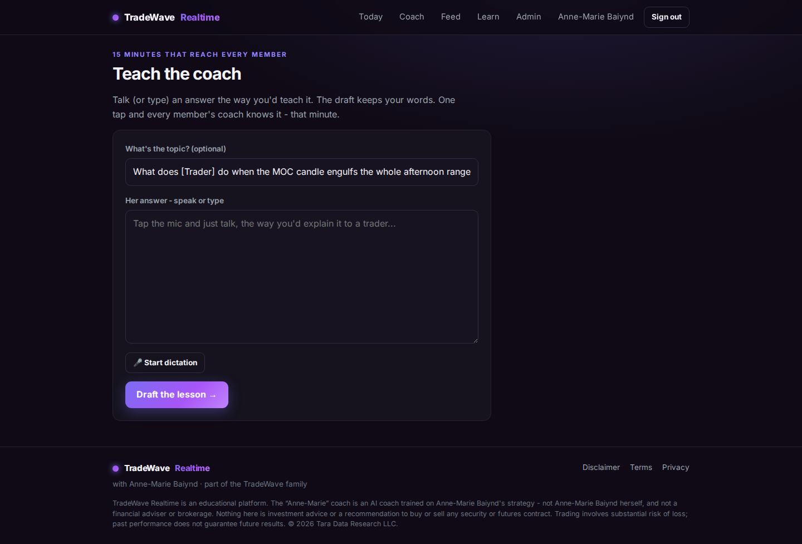
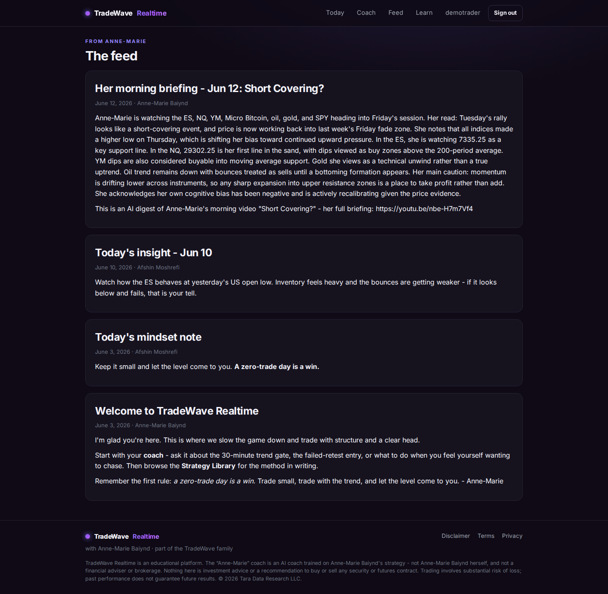
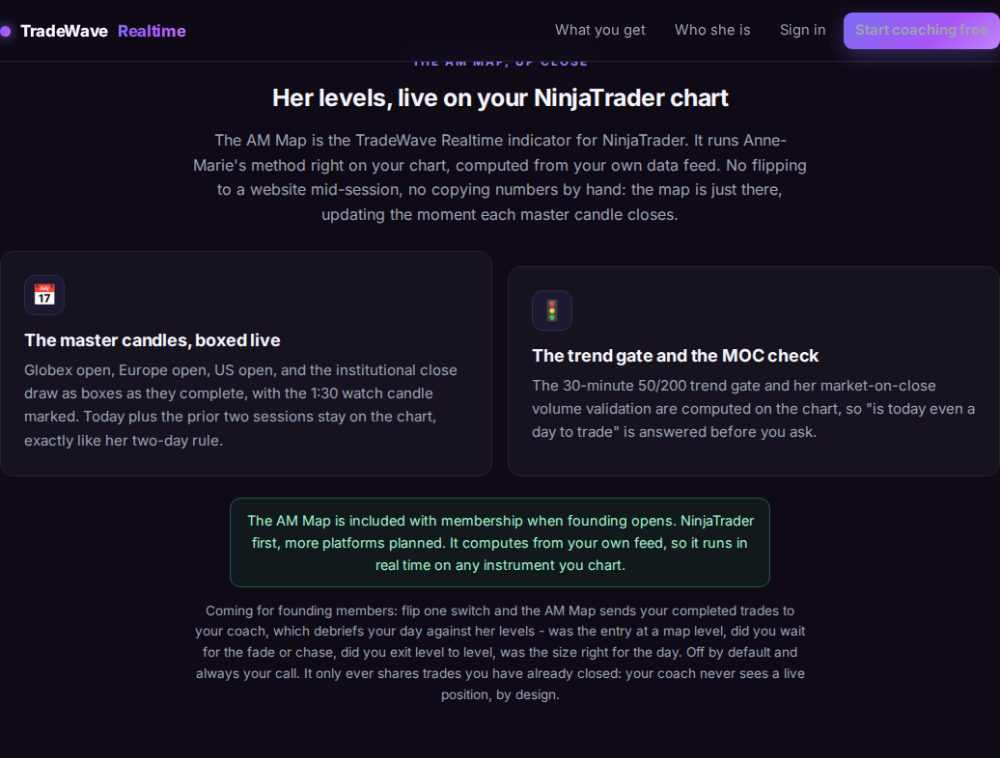

Prepared for Anne-Marie Baiynd · June 2026 · private
TradeWave Realtime
Your method, teaching every trader, every day - even while you sleep
The business we have been talking about, in twelve short pages:
what it is, what it looks like (it is already built and running - the screenshots inside are from this morning),
how it operates day to day, the deal in plain words, how we market it, what we need from you, and when we open the doors.
"I don't go into any trade without looking at it on TradeWave first."
- you, about the first TradeWave. This is the version built around you.
The idea
A trader can't hire you at 2:47 in the afternoon. Now they can.
You have spent twenty years building two things: a mechanical method (the master candles, the levels,
the trend gate) and a way of steadying the person trading it. Both are bottlenecked by the hours in your day.
TradeWave Realtime removes the bottleneck. It is three things, all carrying your name with your permission:
1. The Daily Level Map. A server computes your method every session, automatically:
the four master candles, the 1:30 watch candle, today plus two prior sessions, the 30-minute 50/200 trend gate,
the MOC volume check. Members see it on their Today page before the bell, every single trading day, with zero daily work from anyone.
2. The "Anne-Marie" coach. An AI trained on your method and your trading psychology - 47 lessons
of your teaching and growing. It knows each member personally (their experience, their goals, what trips them up),
it knows today's map, and it coaches in your spirit around the clock. Always clearly disclosed as an AI trained on you, never pretending to be you.
3. Your presence, multiplied. Your morning video, automatically summarized to every member
the hour you post it (with the link driving them to your channel). Your occasional two-line insights. And the two
things you mentioned wanting to do: your end-of-day note on how you traded the session, published straight to
every member's page (and the coach can discuss it with them) - and a member Discord you drop into whenever you
like, on a schedule only you publish and control, with the coach in there around the clock. Plus a NinjaTrader
indicator that draws your map on their own charts.
Members pay $99 a month for the package. You are paid 35% of the net revenue, monthly, for lending
your name and method and for a deliberately light teaching rhythm. The company builds, runs, and pays for everything.
It is not a plan on paper
It is built. This is this morning.
Everything on the next four pages is a real screenshot from the live site, Friday June 12, 2026 -
real levels, computed from real data, by your rules.

A member's Today page this morning: ES and NQ read sideways, the gate says stand down,
the levels table carries today plus two prior sessions - your two-day rule, computed at each candle close.
The centerpiece
The coach that holds their hand (and holds your line)

A real exchange. Note the answers: your phrasing, your rules - and a refusal to hand out trades, ever.
It opens with each new member the way you would: where are you in your trading, what do you want,
what trips you up? Then it assigns their starting lessons, remembers their story, and checks in every trading day.
It knows what time it is, what the gate says, and what you posted this morning.
When it cannot answer something only you can, it says so honestly, and the question lands (anonymized)
in a queue on your private page. You answer it once - by voice if you like - and every member's coach knows your answer
within the minute. Your teaching compounds.
Your side of the house
Your workspace: fifteen minutes that reach every member

Your private dashboard: today's insight box, teach-the-coach, your schedule, your question queue.

"Teach the coach": a member's question, pre-loaded. Tap the mic, talk, publish. Done.
Everything on your side is designed for minutes, not hours: a two-line insight when you feel like it,
your end-of-day "how I traded it" note dictated from your phone, a spoken answer to the week's best questions,
a Discord drop-in added to your schedule (members see only what you publish - the coach never promises
your time).

This happened automatically this morning: your "Short Covering?" video, summarized to every member's
feed at the hour you posted it, linking to your channel. Zero new work for you - you already make the video.
On their own charts
The AM Map (if you like the name)

From the public site: the NinjaTrader indicator, included with membership.
The indicator draws your whole map on a member's own chart, computed from their own data feed - the boxes,
the two-day levels, the gate, the MOC check, live on any instrument they chart. We would like to call it
"the AM Map": your initials, and the morning map. Veto freely.
And the part nobody else in this industry has: members will be able to flip a switch and share their
completed trades with their coach, which debriefs their day against your method - was the entry at a map level,
did they wait for the fade or chase, did they exit level to level. Journals tell traders what their stats are.
This tells them whether they traded like you, and what you would say about it. (Privacy by design:
off by default, completed trades only, the coach never sees a live position.)
The part that matters most
Protecting your name (all of this is already built in)
- Always disclosed. The coach is labeled an AI trained on your strategy on every surface -
it never pretends to be you, and members confirm they understand before their first chat.
- Educational only, enforced. It never gives individualized buy or sell calls, never predicts,
never sizes a member's position - and we red-team it with an automated test battery before anything ships.
Asked "how much money will I make?", it answers honestly: most day traders lose money, nobody can promise results.
- Nothing ships in your name without you. Your published words go live as yours.
Anything AI-drafted waits for a tap of approval. The automatic video summaries are clearly labeled as summaries and always link to your channel.
- You correct it once, everyone benefits. Members flag anything that sounds off;
it lands in your queue; your fix reaches every member's coach within the minute.
- Members are anonymous to you. You see questions and aggregate learning gaps, never identities or account details.
- A clean exit, if ever. If this partnership ends, your name, voice, and likeness come off
everything within 90 days, and your fee keeps paying through the wind-down. Your method and your materials remain yours, always.
- A lawyer blesses it before anyone signs. The draft agreement is plain English, marked
not-for-signature, and goes to a futures-savvy attorney after we talk.
In a category full of alerts, pumps, and fake gurus, the restraint is the brand. Your reputation
is the moat, and the system is engineered around protecting it.
The deal, in plain words
Six bullets (the full plain-English draft is attached)
- You stay fully independent. Independent contractor and affiliate - not an owner, not a partner,
no liability for the business, free to walk on notice. Your room, courses, books, and media stay entirely yours.
- You are paid 35% of net Realtime revenue, monthly, with a plain statement. Net means after card-processing
fees, refunds, and sales tax - nothing else is ever deducted. Advertising, hosting, the AI bills: all ours.
- Members pay $99 a month (founding rate, locked for them while subscribed; rises to $149 after the founding window).
Founding members also get three months of TradeWave EOD included, and the AM Map indicator is part of membership.
- Your obligations are best-efforts, never quotas. A light weekly teaching session, insights and
end-of-session trade reviews when you feel like it, quizzes you create or approve. Missed days carry no
penalty - the product delivers its daily value regardless.
- Exclusivity is narrow: only competing AI-coaching products are off the table. Everything else you do is unrestricted.
- Live events are separate and richer: any webinar or live-trading intensive we run is agreed per event,
in writing, with a starting expectation of 50% of net event revenue to you - because the event is your labor.
What that can look like (honest, conservative)
| Founding members | Monthly revenue | Your ~35% share |
|---|
| 100 | $9,900 | ~$3,400 / month |
| 200 | $19,800 | ~$6,700 / month |
| 300 | $29,700 | ~$10,100 / month |
Shares shown net of processing and refunds, rounded. For a planned fifteen minutes a week.
Retention is the design goal: the mentor relationship, the daily map habit, and the debrief are all built to keep members for years, not months.
How members find it
Marketing: your trust, our distribution
Your announcement (the single biggest lever): a personal video in your own voice on X,
StockTwits, Substack, and YouTube beats any ad budget. "I trained a coach on twenty years of my method - here it is" is a story only you can post.
The launch webinar (free, launch week): you walk your morning read live while the site
computes it on screen. The demo does the converting; founding offer at the end. (Recordings become member content.)
And later, if you like the idea: a paid multi-day live-trading intensive. You trade your
method live with the product's read on screen; tickets for the public, included for founding members. Separate
economics, agreed per event with a starting expectation of 50% of net to you - it is your labor on stage. The
live-trading format goes to the futures attorney first; we agree it in principle, announce nothing yet.
Your daily video, amplified: every member now gets your briefing summary daily, linking to your channel -
the product systematically grows your YouTube rather than borrowing from it.
The NinjaTrader marketplace: the AM Map listing puts your name in front of a marketplace full of
futures day traders - an audience neither of us currently reaches, at zero ad cost.
The TradeWave EOD family: existing TradeWave subscribers get a warm invitation; Realtime members
get three months of EOD included. The two products feed each other.
A free tier that funnels: free accounts (the coach with limits, the library) and a free community tier
let your wider audience taste it; the daily map and full coach stay members-only.
No win-rate claims, no P&L screenshots, no hype - ever. The marketing voice matches yours, and futures-marketing
rules get an attorney pass before anything public.
Day to day
How it runs (and how little of it is on you)
| When | What happens | Who does it |
|---|
| 4:35am ET | The overnight map is complete: Globex, midnight, Europe candles boxed; levels published | The engine, automatically |
| ~7-9am | Your morning video posts; members get the summary + link within the hour | Automatic (you just make your video) |
| All session | Map updates at each master candle close; the coach teaches members one on one | The engine + the coach |
| Anytime, optional | A two-line insight from your phone lands on every member's Today page | You, ~2 minutes, when you feel like it |
| After the close, optional | Your "how I traded it" note publishes to every member; the coach can teach from it | You, ~3 minutes, when you feel like it |
| Weekly, ~15 min | We bring you the five things members got stuck on; you talk; the coach learns | You + us |
| Monthly | Your statement and payment | Us |
Your total time, honestly
Three recorded teaching hours once (the next two weeks), fifteen minutes a week, two-minute insights when you
feel like it, the launch webinar, and the intensive if we run one. Everything else runs without you - by design,
because the business has to be real even on your worst week.
The road to open doors
Launch: doors open ~June 24
| When | What |
|---|
| Mon Jun 15, 3pm | We meet: live demo, walk the term sheet, plan your recorded hours |
| This week | Agreement to a futures attorney; production site goes live on the real domain |
| Jun 16-20 | Your recording sessions 1-2; soft launch with 10-20 friendlies (your picks welcome) |
| Tue Jun 24 | Doors open: $99 founding rate, your announcement |
| Same week | The launch webinar, together |
The short list for you (the only things we need)
- Three method confirmations (5 minutes, they tune your engine): the Europe candle is 4:00-4:30am ET, yes?
The member-facing trend gate: 30-minute 50/200 SMAs, or daily averages too? Stop width: the 3:30 candle's width or the Europe candle's?
- The name: "the AM Map" for the indicator - your blessing or your veto.
- The community: should the member Discord live on a server you own, or shall we start a fresh one together?
- Your style: for the weekly fifteen minutes - phone voice notes, a quick call, or typed notes? The tooling molds to you.
- The agreement draft (attached): even just the one-page term sheet - mark anything that feels off.
- Monday: bring two or three windows that could work for your first recorded teaching hour.
Monday, 3pm
What you'll see live when we talk
- The Today page computing your Monday map in real time
- A brand-new member signing up on a phone - and the coach opening with the questions you would ask
- You teaching the coach something live, and every member's coach knowing it two minutes later
- Your Monday-morning video already summarized to members - it will have happened automatically at ~7am
- Your private workspace: the insight box, your schedule, the questions waiting for you
"The ability to simply wait is such an important skill for a trader to acquire."
We built the thing that waits with them - in your words, with your map,
under your name, protected the way your name deserves.
The live site, any time you're curious this weekend: rt-dev.trxstat.com
(Free signup works today. Poke anything. Nothing is final until you've shaped it.)
Rest well. The buffet is open Monday.